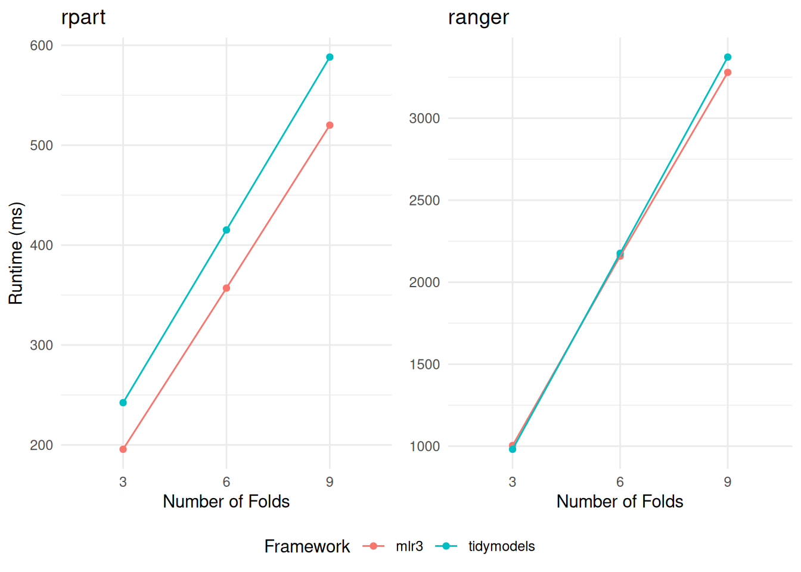
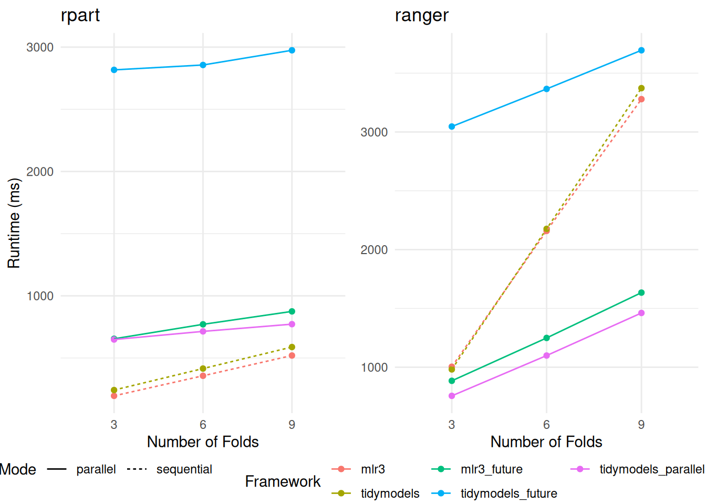
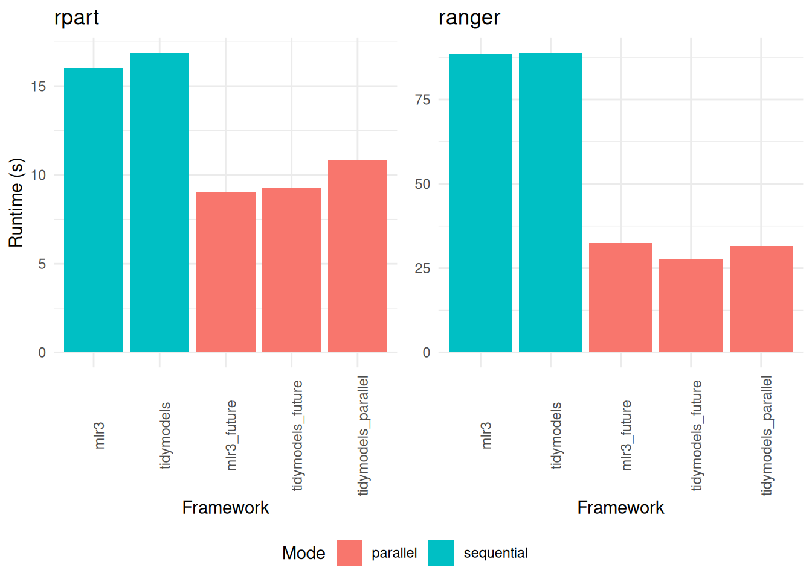
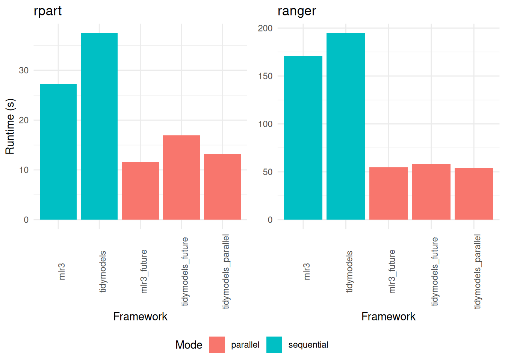

![]()
library("mlr3verse")
library("tidymodels")
library("microbenchmark")
task = tsk("sonar")
data = task$data()
formula = Class ~ .Scope
In the realm of data science, machine learning frameworks play an important role in streamlining and accelerating the development of analytical workflows. Among these, tidymodels and mlr3 stand out as prominent tools within the R community. They provide a unified interface for data preprocessing, model training, resampling and tuning. The streamlined and accelerated development process, while efficient, typically results in a trade-off concerning runtime performance. This article undertakes a detailed comparison of the runtime efficiency of tidymodels and mlr3, focusing on their performance in training, resampling, and tuning machine learning models. Specifically, we assess the time efficiency of these frameworks in running the rpart::rpart() and ranger::ranger() models, using the Sonar dataset as a test case. Additionally, the study delves into analyzing the runtime overhead of these frameworks by comparing their performance against training the models without a framework. Through this comparative analysis, the article aims to provide valuable insights into the operational trade-offs of using these advanced machine learning frameworks in practical data science applications.
Setup
We employ the microbenchmark package to measure the time required for training, resampling, and tuning models. This benchmarking process is applied to the Sonar dataset using the rpart and ranger algorithms.
To ensure the robustness of our results, each function call within the benchmark is executed 100 times in a randomized sequence. The microbenchmark package then provides us with detailed insights, including the median, lower quartile, and upper quartile of the runtimes. To further enhance the reliability of our findings, we execute the benchmark on a cluster. Each run of microbenchmark is repeated 100 times, with different seeds applied for each iteration. Resulting in a total of 10,000 function calls of each command. The computing environment for each worker in the cluster consists of 3 cores and 12 GB of RAM. For transparency and reproducibility, the examples of the code used for this experiment are provided as snippets in the article. The complete code, along with all details of the experiment, is available in our public repository, mlr-org/mlr-benchmark.
It’s important to note that our cluster setup is not specifically optimized for single-core performance. Consequently, executing the same benchmark on a local machine with might yield faster results.
Benchmark
Train the Models
Our benchmark starts with the fundamental task of model training. To facilitate a direct comparison, we have structured our presentation into two distinct segments. On the left, we demonstrate the initialization of the rpart model, employing both mlr3 and tidymodels frameworks. The rpart model is a decision tree classifier, which is a simple and fast-fitting algorithm for classification tasks. Simultaneously, on the right, we turn our attention to the initialization of the ranger model, known for its efficient implementation of the random forest algorithm. Our aim is to mirror the configuration as closely as possible across both frameworks, maintaining consistency in parameters and settings.
# tidymodels
tm_mod = decision_tree() %>%
set_engine("rpart",
xval = 0L) %>%
set_mode("classification")
# mlr3
learner = lrn("classif.rpart",
xval = 0L)
# tidymodels
tm_mod = rand_forest(trees = 1000L) %>%
set_engine("ranger",
num.threads = 1L,
seed = 1) %>%
set_mode("classification")
# mlr3
learner = lrn("classif.ranger",
num.trees = 1000L,
num.threads = 1L,
seed = 1,
verbose = FALSE,
predict_type = "prob")We measure the runtime for the train functions within each framework. The result of the train function is a trained model in both frameworks. In addition, we invoke the rpart() and ranger() functions to establish a baseline for the minimum achievable runtime. This allows us to not only assess the efficiency of the train functions in each framework but also to understand how they perform relative to the base packages.
# tidymodels train
fit(tm_mod, formula, data = data)
# mlr3 train
learner$train(task)When training an rpart model, tidymodels demonstrates superior speed, outperforming mlr3 (Table 1). Notably, the mlr3 package requires approximately twice the time compared to the baseline.
A key observation from our results is the significant relative overhead when using a framework for rpart model training. Given that rpart inherently requires a shorter training time, the additional processing time introduced by the frameworks becomes more pronounced. This aspect highlights the trade-off between the convenience offered by these frameworks and their impact on runtime for quicker tasks.
Conversely, when we shift our focus to training a ranger model, the scenario changes (Table 2). Here, the runtime performance of ranger is strikingly similar across both tidymodels and mlr3. This equality in execution time can be attributed to the inherently longer training duration required by ranger models. As a result, the relative overhead introduced by either framework becomes minimal, effectively diminishing in the face of the more time-intensive training process. This pattern suggests that for more complex or time-consuming tasks, the choice of framework may have a less significant impact on overall runtime performance.
rpart depending on the framework.
| Framework | LQ | Median | UQ |
|---|---|---|---|
| base | 11 | 11 | 12 |
| mlr3 | 23 | 23 | 24 |
| tidymodels | 18 | 18 | 19 |
ranger depending on the framework.
| Framework | LQ | Median | UQ |
|---|---|---|---|
| base | 286 | 322 | 347 |
| mlr3 | 301 | 335 | 357 |
| tidymodels | 310 | 342 | 362 |
Resample Sequential
We proceed to evaluate the runtime performance of the resampling functions within both frameworks, specifically under conditions without parallelization. This step involves the generation of resampling splits, including 3-fold, 6-fold, and 9-fold cross-validation. Additionally, we run a 100 times repeated 3-fold cross-validation.
We generate the same resampling splits for both frameworks. This consistency is key to ensuring that any observed differences in runtime are attributable to the frameworks themselves, rather than variations in the resampling process.
In our pursuit of a fair and balanced comparison, we address certain inherent differences between the two frameworks. Notably, tidymodels inherently includes scoring of the resampling results as part of its process. To align the comparison, we replicate this scoring step in mlr3, thus maintaining a level field for evaluation. Furthermore, mlr3 inherently saves predictions during the resampling process. To match this, we activate the saving of the predictions in tidymodels.
# tidymodels resample
control = control_grid(save_pred = TRUE)
metrics = metric_set(accuracy)
tm_wf =
workflow() %>%
add_model(tm_mod) %>%
add_formula(formula)
fit_resamples(tm_wf, folds, metrics = metrics, control = control)
# mlr3 resample
measure = msr("classif.acc")
rr = resample(task, learner, resampling)
rr$score(measure)When resampling the fast-fitting rpart model, mlr3 demonstrates a notable edge in speed, as detailed in Table 3. In contrast, when it comes to resampling the more computationally intensive ranger models, the performance of tidymodels and mlr3 converges closely (Table 4). This parity in performance is particularly noteworthy, considering the differing internal mechanisms and optimizations of tidymodels and mlr3. A consistent trend observed across both frameworks is a linear increase in runtime proportional to the number of folds in cross-validation (Figure 1).
rpart depending on the framework and resampling strategy.
| Framework | Resampling | LQ | Median | UQ |
|---|---|---|---|---|
| mlr3 | cv3 | 188 | 196 | 210 |
| tidymodels | cv3 | 233 | 242 | 257 |
| mlr3 | cv6 | 343 | 357 | 379 |
| tidymodels | cv6 | 401 | 415 | 436 |
| mlr3 | cv9 | 500 | 520 | 548 |
| tidymodels | cv9 | 568 | 588 | 616 |
| mlr3 | rcv100 | 15526 | 16023 | 16777 |
| tidymodels | rcv100 | 16409 | 16876 | 17527 |
ranger depending on the framework and resampling strategy.
| Framework | Resampling | LQ | Median | UQ |
|---|---|---|---|---|
| mlr3 | cv3 | 923 | 1004 | 1062 |
| tidymodels | cv3 | 916 | 981 | 1023 |
| mlr3 | cv6 | 1990 | 2159 | 2272 |
| tidymodels | cv6 | 2089 | 2176 | 2239 |
| mlr3 | cv9 | 3074 | 3279 | 3441 |
| tidymodels | cv9 | 3260 | 3373 | 3453 |
| mlr3 | rcv100 | 85909 | 88642 | 91381 |
| tidymodels | rcv100 | 87828 | 88822 | 89843 |

rpart (displayed on the left) and ranger (on the right). The comparison encompasses variations across different frameworks and the number of folds in the cross-validation.
Resample Parallel
We conducted a second set of resampling function tests, this time incorporating parallelization to explore its impact on runtime efficiency. In this phase, we utilized doFuture and doParallel as the primary parallelization packages for tidymodels, recognizing their robust support and compatibility. Meanwhile, for mlr3, the future package was employed to facilitate parallel processing.
Our findings, as presented in the respective tables (Table 5 and Table 6), reveal interesting dynamics about parallelization within the frameworks. When the number of folds in the resampling process is doubled, we observe only a marginal increase in the average runtime. This pattern suggests a significant overhead associated with initializing the parallel workers, a factor that becomes particularly influential in the overall efficiency of the parallelization process.
In the case of the rpart model, the parallelization overhead appears to outweigh the potential speedup benefits, as illustrated in the left section of Figure 2. This result indicates that for less complex models like rpart, where individual training times are relatively short, the initialization cost of parallel workers may not be sufficiently offset by the reduced processing time per fold.
Conversely, for the ranger model, the utilization of parallelization demonstrates a clear advantage over the sequential version, as evidenced in the right section of Figure 2. This finding underscores that for more computationally intensive models like ranger, which have longer individual training times, the benefits of parallel processing significantly overcome the initial overhead of worker setup. This differentiation highlights the importance of considering the complexity and inherent processing time of models when deciding to implement parallelization strategies in these frameworks.
mlr3 with future and rpart depending on the resampling strategy.
| Resampling | LQ | Median | UQ |
|---|---|---|---|
| cv3 | 625 | 655 | 703 |
| cv6 | 738 | 771 | 817 |
| cv9 | 831 | 875 | 923 |
| rcv100 | 8620 | 9043 | 9532 |
mlr3 with future and ranger depending on the resampling strategy.
| Resampling | LQ | Median | UQ |
|---|---|---|---|
| cv3 | 836 | 884 | 943 |
| cv6 | 1200 | 1249 | 1314 |
| cv9 | 1577 | 1634 | 1706 |
| rcv100 | 32047 | 32483 | 33022 |
When paired with doFuture, tidymodels exhibits significantly slower runtime compared to the mlr3 package utilizing future (Table 7 and Table 8). We observed that tidymodels exports more data to the parallel workers, which notably exceeds that of mlr3. This substantial difference in data export could plausibly account for the observed slower runtime when using tidymodels on small tasks.
tidymodels with doFuture and rpart depending on the resampling strategy.
| Resampling | LQ | Median | UQ |
|---|---|---|---|
| cv3 | 2778 | 2817 | 3019 |
| cv6 | 2808 | 2856 | 3033 |
| cv9 | 2935 | 2975 | 3170 |
| rcv100 | 9154 | 9302 | 9489 |
tidymodels with doFuture and ranger depending on the resampling strategy.
| Resampling | LQ | Median | UQ |
|---|---|---|---|
| cv3 | 2982 | 3046 | 3234 |
| cv6 | 3282 | 3366 | 3543 |
| cv9 | 3568 | 3695 | 3869 |
| rcv100 | 27546 | 27843 | 28166 |
The utilization of the doParallel package demonstrates a notable improvement in handling smaller resampling tasks. In these scenarios, the resampling process consistently outperforms the mlr3 framework in terms of speed. However, it’s important to note that even with this enhanced performance, the doParallel package does not always surpass the efficiency of the sequential version, especially when working with the rpart model. This specific observation is illustrated in the left section of Figure 2.
tidymodels with doParallel and rpart depending on the resampling strategy.
| Resampling | LQ | Median | UQ |
|---|---|---|---|
| cv3 | 557 | 649 | 863 |
| cv6 | 602 | 714 | 910 |
| cv9 | 661 | 772 | 968 |
| rcv100 | 10609 | 10820 | 11071 |
tidymodels with doParallel and ranger depending on the resampling strategy.
| Resampling | LQ | Median | UQ |
|---|---|---|---|
| cv3 | 684 | 756 | 948 |
| cv6 | 1007 | 1099 | 1272 |
| cv9 | 1360 | 1461 | 1625 |
| rcv100 | 31205 | 31486 | 31793 |

rpart (displayed on the left) and ranger (on the right). The comparison encompasses variations across different frameworks, the number of folds in the cross-validation, and the implementation of parallelization.
In the context of repeated cross-validation, our findings underscore the efficacy of parallelization (Figure 3). Across all frameworks tested, the adoption of parallel processing techniques yields a significant increase in speed. This enhancement is particularly noticeable in larger resampling tasks, where the demands on computational resources are more substantial.
Interestingly, within these more extensive resampling scenarios, the doFuture package emerges as a more efficient option compared to doParallel. This distinction is important, as it highlights the relative strengths of different parallelization packages under varying workload conditions. While doParallel shows proficiency in smaller tasks, doFuture demonstrates its capability to handle larger, more complex resampling processes with greater speed and efficiency.

rpart (displayed on the left) and ranger (on the right). The comparison encompasses variations across different frameworks and the implementation of parallelization.
Tune Sequential
We then shift our focus to assessing the runtime performance of the tuning functions. In this phase, the tidymodels package is utilized to evaluate a predefined grid, comprising a specific set of hyperparameter configurations. To ensure a balanced and comparable analysis, we employ the "design_points" tuner from the mlr3tuning package. This approach allows us to evaluate the same grid within the mlr3 framework, maintaining consistency across both platforms. The grid used for this comparison contains 200 hyperparameter configurations each, for both the rpart and ranger models. This approach helps us to understand how each framework handles the optimization of model hyperparameters, a key aspect of building effective and efficient machine learning models.
# tidymodels
tm_mod = decision_tree(
cost_complexity = tune()) %>%
set_engine("rpart",
xval = 0) %>%
set_mode("classification")
tm_design = data.table(
cost_complexity = seq(0.1, 0.2, length.out = 200))
# mlr3
learner = lrn("classif.rpart",
xval = 0,
cp = to_tune())
mlr3_design = data.table(
cp = seq(0.1, 0.2, length.out = 200))
# tidymodels
tm_mod = rand_forest(
trees = tune()) %>%
set_engine("ranger",
num.threads = 1L,
seed = 1) %>%
set_mode("classification")
tm_design = data.table(
trees = seq(1000, 1199))
# mlr3
learner = lrn("classif.ranger",
num.trees = to_tune(1, 10000),
num.threads = 1L,
seed = 1,
verbose = FALSE,
predict_type = "prob")
mlr3_design = data.table(
num.trees = seq(1000, 1199))We measure the runtime of the tune functions within each framework. Both the tidymodels and mlr3 frameworks are tasked with identifying the optimal hyperparameter configuration.
# tidymodels tune
tune::tune_grid(
tm_wf,
resamples = resamples,
grid = design,
metrics = metrics)
# mlr3 tune
tuner = tnr("design_points", design = design, batch_size = nrow(design))
mlr3tuning::tune(
tuner = tuner,
task = task,
learner = learner,
resampling = resampling,
measures = measure,
store_benchmark_result = FALSE)In our sequential tuning tests, mlr3 demonstrates a notable advantage in terms of speed. This finding is clearly evidenced in our results, as shown in Table Table 11 for the rpart model and Table Table 12 for the ranger model. The faster performance of mlr3 in these sequential runs highlights its efficiency in handling the tuning process without parallelization.
rpart depending on the framework.
| Framework | LQ | Median | UQ |
|---|---|---|---|
| mlr3 | 27 | 27 | 28 |
| tidymodels | 37 | 37 | 39 |
ranger depending on the framework.
| Framework | LQ | Median | UQ |
|---|---|---|---|
| mlr3 | 167 | 171 | 175 |
| tidymodels | 194 | 195 | 196 |
Tune Parallel
Concluding our analysis, we proceed to evaluate the runtime performance of the tune functions, this time implementing parallelization to enhance efficiency. For these runs, parallelization is executed on 3 cores.
In the case of mlr3, we opt for the largest possible chunk size. This strategic choice means that all points within the tuning grid are sent to the workers in a single batch, effectively minimizing the overhead typically associated with parallelization. This approach is crucial in reducing the time spent in distributing tasks across multiple cores, thereby streamlining the tuning process. On the other hand, the tidymodels package also operates with the same chunk size, but this setting is determined and managed internally within the framework.
By conducting these parallelization tests, we aim to provide a deeper understanding of how each framework handles the distribution and management of computational tasks during the tuning process, particularly in a parallel computing environment. This final set of measurements is important in painting a complete picture of the runtime performance of the tune functions across both tidymodels and mlr3 under different operational settings.
options("mlr3.exec_chunk_size" = 200)Our analysis of the parallelized tuning functions reveals that the runtimes for mlr3 and tidymodels are remarkably similar. However, subtle differences emerge upon closer inspection. For instance, the mlr3 package exhibits a slightly faster performance when tuning the rpart model, as indicated in Table 13. In contrast, it falls marginally behind tidymodels in tuning the ranger model, as shown in Table 14.
Interestingly, when considering the specific context of a 3-fold cross-validation, the doParallel package outperforms doFuture in terms of speed, as demonstrated in Figure 4. This outcome suggests that the choice of parallelization package can have a significant impact on tuning efficiency, particularly in scenarios with a smaller number of folds.
A key takeaway from our study is the clear benefit of enabling parallelization, regardless of the chosen framework-backend combination. Activating parallelization consistently enhances performance, making it a highly recommended strategy for tuning machine learning models, especially in tasks involving extensive hyperparameter exploration or larger datasets. This conclusion underscores the value of parallel processing in modern machine learning workflows, offering a practical solution for accelerating model tuning across various computational settings.
rpart depending on the framework.
| Framework | Backend | LQ | Median | UQ |
|---|---|---|---|---|
| mlr3 | future | 11 | 12 | 12 |
| tidymodels | doFuture | 17 | 17 | 17 |
| tidymodels | doParallel | 13 | 13 | 13 |
ranger depending on the framework.
| Framework | Backend | LQ | Median | UQ |
|---|---|---|---|---|
| mlr3 | future | 54 | 55 | 55 |
| tidymodels | doFuture | 58 | 58 | 59 |
| tidymodels | doParallel | 54 | 54 | 55 |

rpart (displayed on the left) and ranger (on the right). The comparison encompasses variations across different frameworks and the implementation of parallelization.
Conclusion
Our analysis reveals that both tidymodels and mlr3 exhibit comparable runtimes across key processes such as training, resampling, and tuning, each displaying its own set of strengths and efficiencies.
A notable observation is the relative overhead associated with using either framework, particularly when working with fast-fitting models like rpart. In these cases, the additional processing time introduced by the frameworks is more pronounced due to the inherently short training time of rpart models. This results in a higher relative overhead, reflecting the trade-offs between the convenience of a comprehensive framework and the directness of more basic approaches.
Conversely, when dealing with slower-fitting models such as ranger, the scenario shifts. For these more time-intensive models, the relative overhead introduced by the frameworks diminishes significantly. In such instances, the extended training times of the models absorb much of the frameworks’ inherent overhead, rendering it relatively negligible.
In summary, while there is no outright winner in terms of overall performance, the decision to use tidymodels or mlr3 should be informed by the specific requirements of the task at hand.